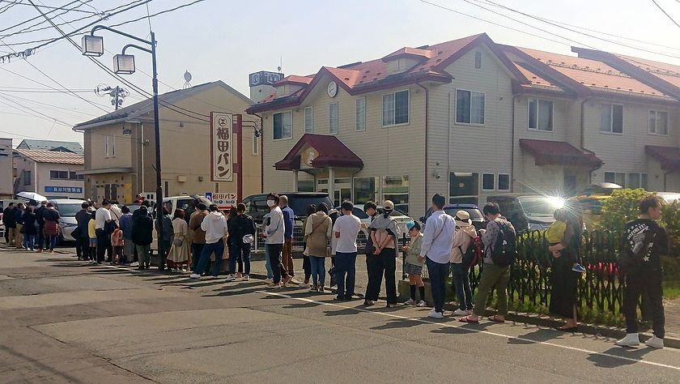

1948年創業の福田パンは、盛岡で知らない人はいないほど地元で親しまれているコッペパン専門店です。
スーパーなどでも販売もしていますが、福田パンのお店に行くと、お好みのジャムや具を入れて目の前で調理してくれます。
朝7時の開店前から行列ができるほど人気なお店になっています。
1948年創業の福田パンは、盛岡で知らない人はいないほど地元で親しまれているコッペパン専門店です。
スーパーなどでも販売もしていますが、福田パンのお店に行くと、お好みのジャムや具を入れて目の前で調理してくれます。
朝7時の開店前から行列ができるほど人気なお店になっています。
福田パン最大の魅力はなんといってもメニューの豊富さです。オープン当初はジャムやあんなどが挟まったコッペパンが2、3種類しかなかったそうですが、現在では合わせて50種類ほどの具材やクリームがあります。
そのなかから、お客さんが好きな組み合わせでオリジナルのコッペパンを作ることができるので、
バリエーションは数え切れません。
多くの種類がありますが、そのなかでも特に人気な組み合わせをご紹介します。
まず、不動の人気商品である「あんバター」です。まったりと甘いあんこにバターをプラスしたあんバターは、多くの方が購入していく大人気商品です。
次に、懐かしの味である「ピーナッツバター」です。昔ながらのピーナッツバターはあっさりとした甘さが魅力のコッペパンです。普通のピーナッツバターのほかに粒入りピーナッツもあります。
また、スーパーやコンビニにも多くの種類が置いてあります。
安価なうえに、手軽に買えるという点でも「福田パン」が親しまれている理由なのではないかと
思います。岩手県に来たらぜひ「福田パン」を片手に旅行を楽しんでみてください。
〒020-0062
岩手県盛岡市長田町12-11
☏ 019-622-5896